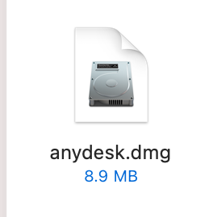
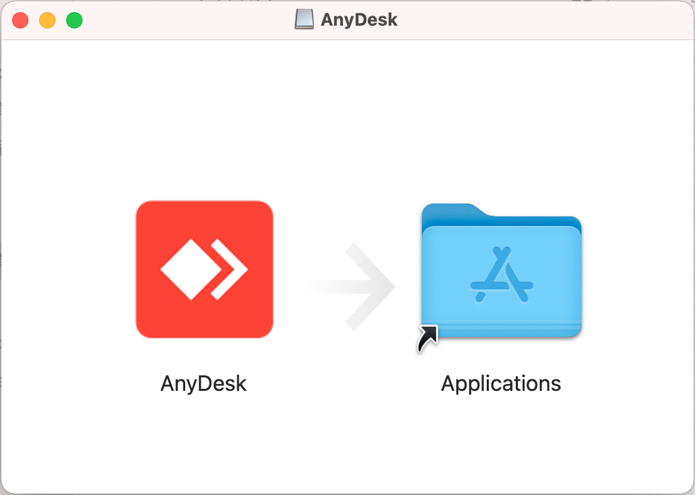
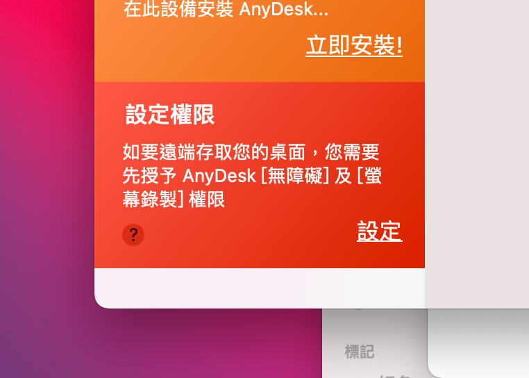
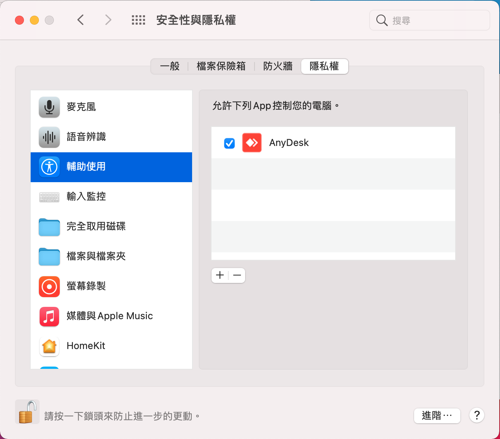
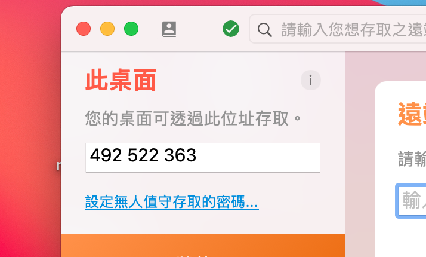
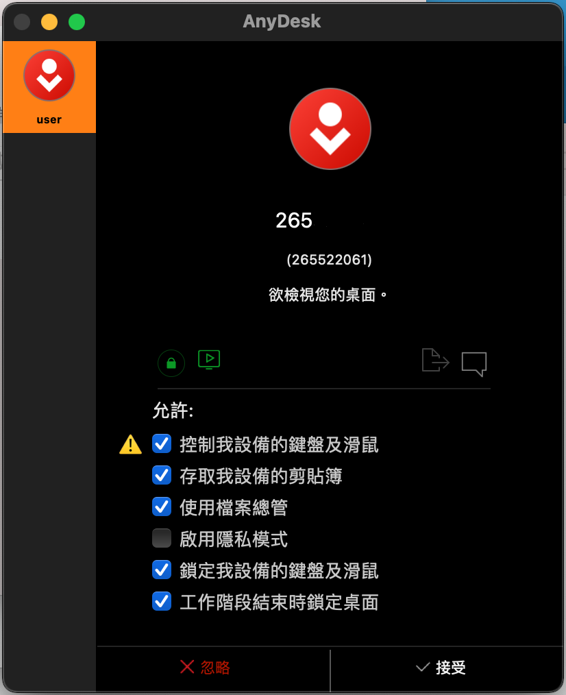

1.Download AnyDesk.exe：
Click here to download！

2.After downloading, double-click to open the DMG file

3.Just click "Open"

4.After the program is opened, click "Settings" in the setting permissions at the bottom right of the window. 
5.After entering the setting page, first click the lock at the bottom left and enter the password.


6.Check AnyDesk in the Accessibility page. 
7.Select the left column, "Screen Recording" page, and check AnyDesk.

8.Back to AnyDesk and send your ID to IT. 
Attention!!! Before connecting, please confirm that the data has been saved and the relevant personal privacy and confidential documents have been closed!
9.When this window appears, click "Accept" 